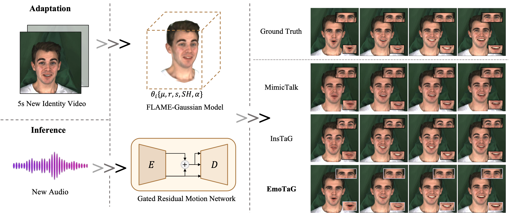

EmoTaG: Emotion-Aware Talking Head Synthesis on Gaussian Splatting with Few-Shot Personalization

Accepted to
The IEEE/CVF Conference on Computer Vision and Pattern Recognition (CVPR) 2026

Figure 1. EmoTaG generates expressive and synchronized 3D talking heads from only 5-second new identity videos. Built upon a FLAME-Gaussian model and a Gated Residual Motion Network, our method achieves better emotional expressiveness, lip synchronization, visual realism, and motion stability compared to state-of-the-art approaches.